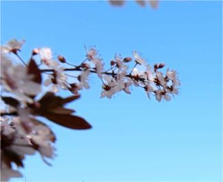

- 1
- 2
- 3
<
>

学校简介
xxxxx学院（Chongqing University of Education，CQUE）是由重庆市人民政府设立的一所全日制普通高等学校，
入选数据中国“百校工程”，是"‘十三五’产教融合发展工程规划项目” 百所应用型本科高校之一、教育部“云数融合科教创新”项目首批试点院校、全国应用技术大学联盟成员单位、
全国大学生文化素质教育基地、重庆市首批转型试点高校、重庆市教师教育创新实验区、重庆市中小学教师发展中心。
中文名: xxxxx学院
创办时间: 19xx年x月
办学性质: xx办高校
地址: xxxx校区：xx市xx区xxx道x号 , xx校区：xx市xx区xxxxxx号
- 教师教育学院
- 学前教育学院
- 文学与传媒学院
- 外国语言文学学院
- 数学与大数据学院
- 人工智能学院
- 生物与化学工程学院
- 经济与工商管理学院
- 旅游与服务管理学院
- 美术学院
二级学院
- 市级一级重点学科 教育学
- 市级重点培育学科 食品科学与工程、计算机科学与技术
- 国家一流本科专业 小学教育
- 市级一流专业 小学教育、学前教育、汉语言文学、计算机科学与技术
- 市级特色专业群 教育学
- 市级特色专业 视觉传达设计、计算机科学与技术、汉语言文学、
小学教育、学前教育、旅游管理
重点、特色学科专业一览表
科学研究


- ◆重庆市人文社科重点研究基地“重庆市统筹城乡教师教育研究中心”
- ◆教师教育创新实验区
- ◆重庆市功能性食品协同创新中心
- ◆重庆市功能性食品工程技术研究中心
- ◆重庆市功能性食品工程实验室
- ◆“启智”众创空间
- ◆重庆市人文社会科学普及基地“重庆第二师范学院文学与传媒系”
- ◆三峡库区药用资源重庆市重点实验室
- ◆交互式教育电子工程研究中心(培育)
- ◆儿童大数据重庆市工程实验室
- ◆儿童研究院
- ◆儿童保健食品机制研究和产业开发科研创新团队
- ◆优益鲜复合调味品关键技术攻关及产业化创新创业团队
- ◆多手性中心含氮杂环类化合物研发及产业化创新创业团队
- ◆儿童教育大数据分析关键技术及其应用研究(培育)科研创新平台
- ◆三峡库区药用资源利用团队
市级以上科研平台、科研团队一览表
学校坚持科研兴校,服务社会能力不断提高。依托自身办学资源禀赋及社会发展需求,以教育学特色学科专业群建设为抓手,集人才培养、科学研究、社会服务为一体,聚焦“服务0~12岁儿童成长”，提升学校社会贡献度和影响力。近五年来,学校教师主持国家自科、社土科基金、全国教育科学规划项目10项,省（部)级科研项目466项;公开出版专著、编著、译著84部,公开发表学术论文1994篇;获得重庆市禾斗技进步奖3项、重庆市社科优秀成果奖1项、重庆市发展研究奖3项。重庆市科技创新团队5个。
过灰（著）
本网页用于学习交流，如有侵权，请联系我。
联系电话：15823573400
本网页用于学习交流，如有侵权，请联系我。
联系电话：15823573400